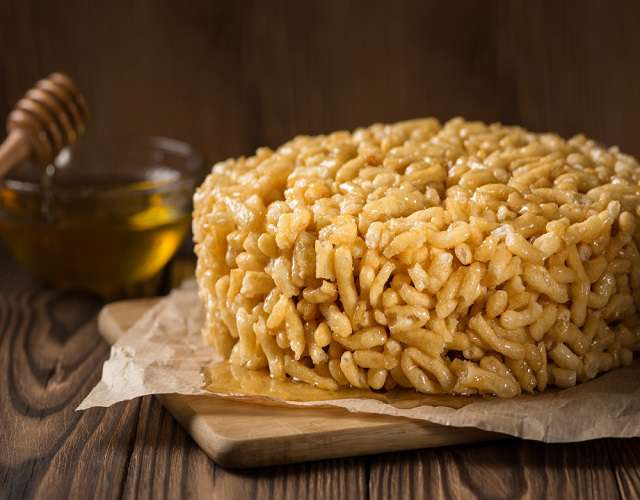

Чак-ча́к (тат. чәк-чәк, башк. сәк-сәк, каз. шақ-шақ, кирг. чак-чак) — мучное восточное печенье из обжаренных во фритюре кусочков теста, перемешанных с медовым сиропом. Национальное кулинарное изделие башкир и татар, также блюдо киргизов, узбеков, таджиков и соседних с Башкортостаном и Татарстаном народов — русских Южного Урала и казахов северо-западного Казахстана.
Наряду с «эчпочмаком» чак-чак — одна из визитных карточек Республики Татарстан и наиболее распространённая «кулинарная» ассоциация с Татарстаном среди жителей России. Я люблю чак-чак и очень скучаю по дому...
Яйца взбивают с солью, добавляют муку и замешивают мягкое тесто. Раскатывают на тонкие жгуты и делят на короткие отрезки размером с фасоль. Обжаривают во фритюре. После остывания перемешивают с горячим медовым сиропом и выкладывают в виде горки. Сироп готовят из сахара, воды и мёда.
Горку чак-чака украшают прозрачной разноцветной карамелью, орехами, ягодной пастилой.
Музей открыт в сентябре 2014 года на собственные средства создателей музея — Дмитрия Полосина и Сулеймановой Раушании.
Экскурсии в музее охватывают периоды с Волжской Булгарии до наших дней, но особенное внимание уделяется периоду конца XIX — начала XX веков, который относительно хорошо описан современниками, особенно татарским учёным-энциклопедистом Каюмом Насыри.
В музее воссоздан быт татарского зажиточного дома конца XIX — начала XX веков. Быт воссоздан на основе подлинных фотографий интерьеров татарских домов Казани и Заказанья с использованием образцов сохранившихся предметов быта, убранства дома, одежды, орудий труда того времени. Отличительной особенностью этого музея является то, что практически всё можно потрогать руками и опробовать в действии. В состав музея входит музейная лавка, где можно попробовать и купить чак-чак, баурсак и ещё одно блюдо XIX века, восстановленное по старинному рецепту.